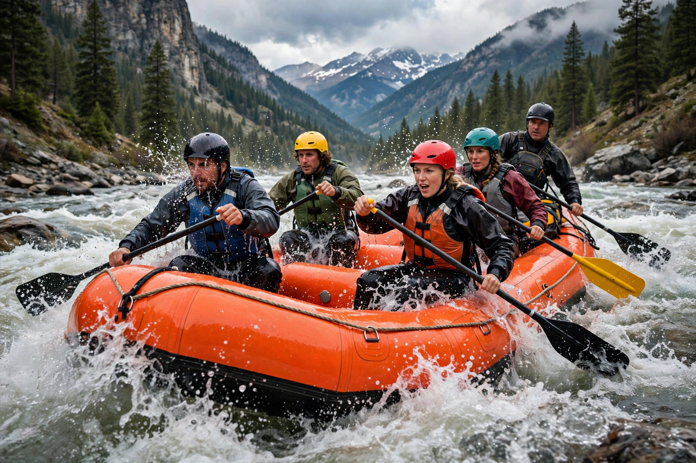
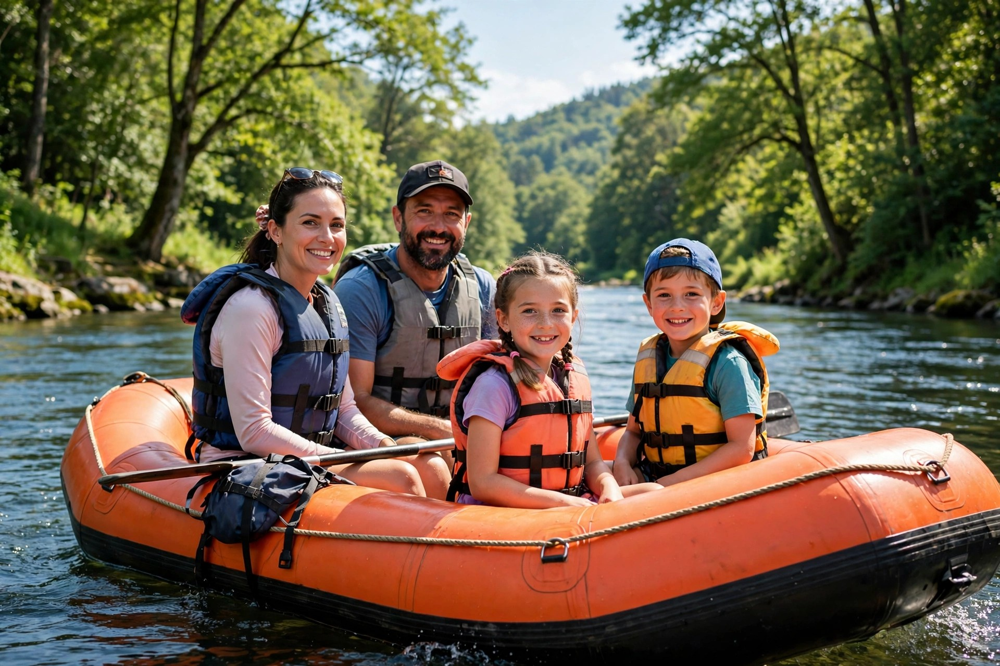
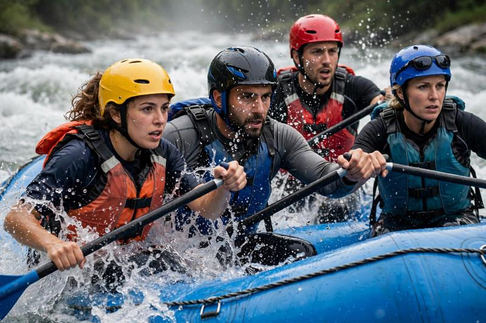

At Extreme Rapids Co., our purpose is to deliver exhilarating, safe adventures, with unwavering commitment to protect nature. Our creed: Courage, Teamwork, Respect. Our motto: Paddle Hard, Live Extreme.

At Extreme Rapids Co., our purpose is to deliver exhilarating, safe adventures, with unwavering commitment to protect nature. Our creed: Courage, Teamwork, Respect. Our motto: Paddle Hard, Live Extreme.
Extreme Rapids Co. was founded in 1998 by a group of river guides who shared a passion for adventure and a love for the wild. What started as a small operation with one raft and 3 guides, we have grown into a team of 20 guides and a fleet of rafts serving thousands of adventurers.

From humble beginnings on the local river, our passion for the outdoors has driven us to become leaders in adventure tourism. Our commitment to safety, customer satisfaction, and environmental stewardship has been our top priority.



